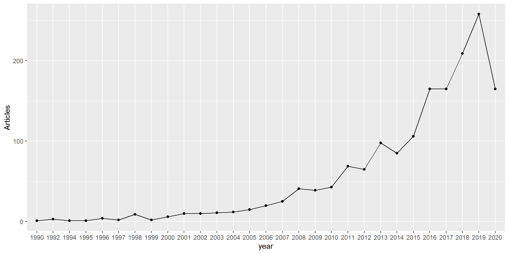
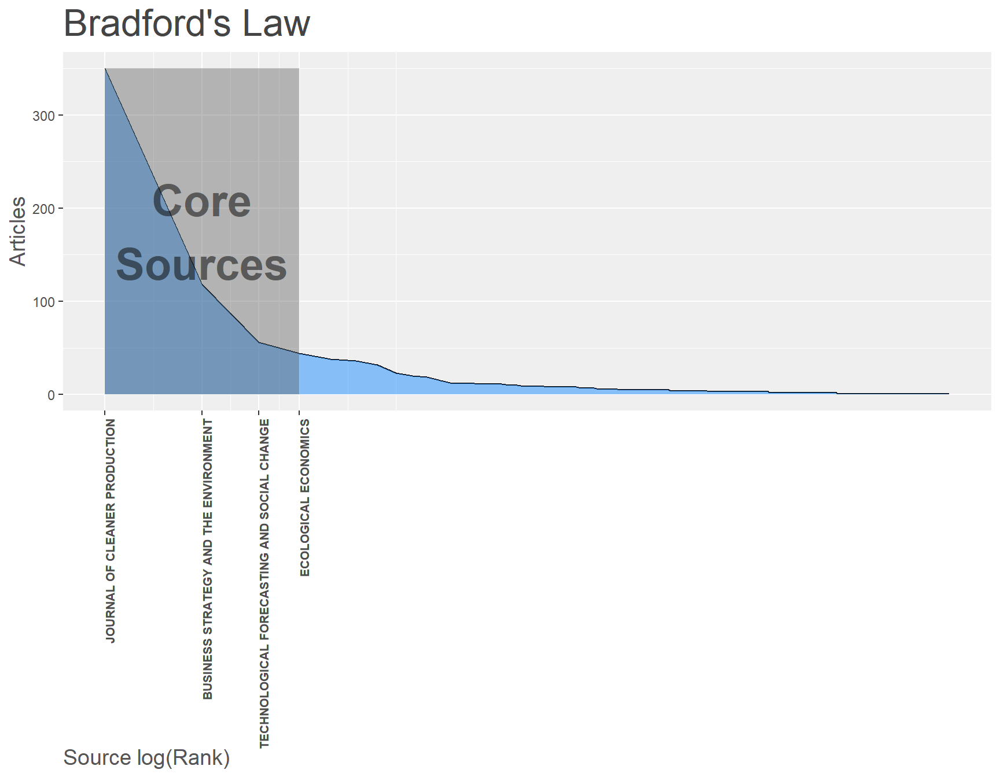
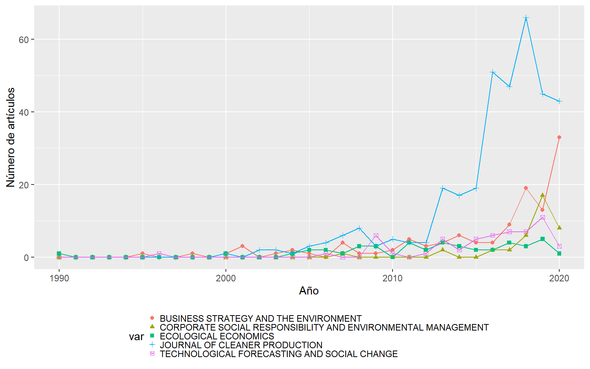
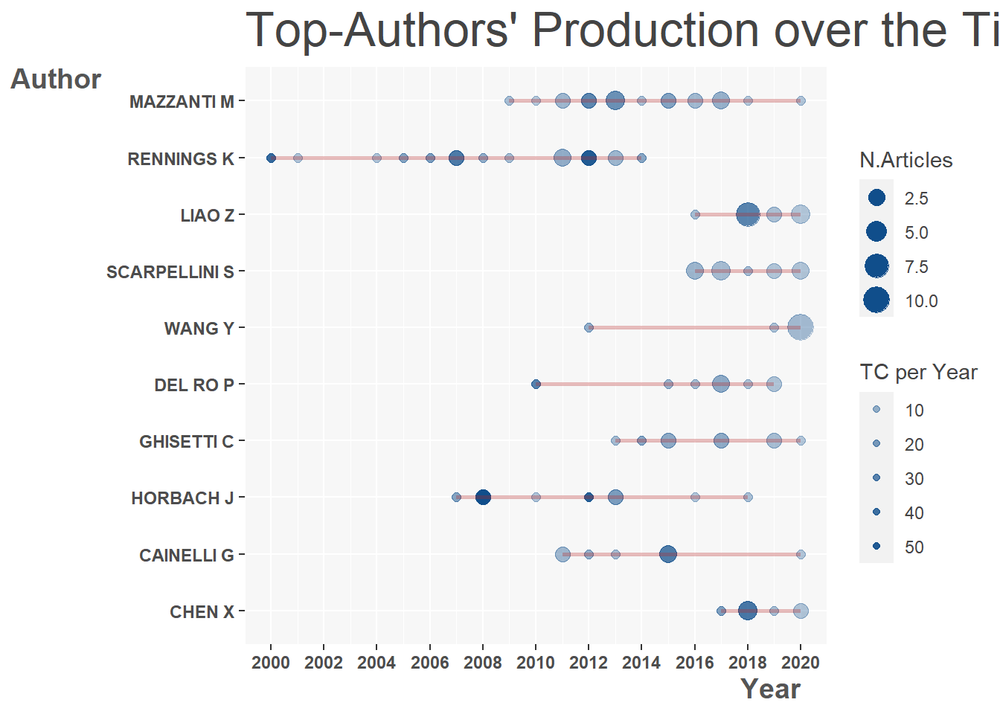
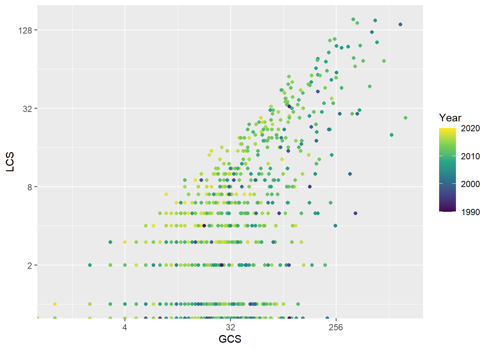

Descripción de las unidades de análisis

Unidades de análisis
Las unidades de análisis representan el conjunto de elementos de donde se extrae la información y los cuales podemos utilizar para aplicar las técnicas bibliométricas. Las principales unidades de análisis son los documentos, autores, revistas, instituciones. Dentro de un documento, las unidades de análisis pueden ser el título, el resumen, las palabras clave y el texto. Seguidamente se aplicará el análisis descriptivo a las principales unidades de análisis.
1. Cargue de paquetes y de la base de datos.
Los siguientes paquetes se usarán para trabajar con la base de datos para el análisis bibliométrico. En la parte de Recursos se indica cómo se pueden instalar. A partir de aquí se deben cargar en la consola de R para su uso.
library(bibliometrix)
library(dplyr)
library(ggplot2)
library(kableExtra)Para cargar la base de datos se comienza por usar la función setwd que permite definir la carpeta donde se encuentre la base de datos y donde guardaremos los resultados del análisis. Luego, la función convert2df permite transformar el archivo a formato bibliometrix
# Definir el directorio de trabajo
setwd("C:/Users/User/Google Drive/Web_pages/example_ecoinnov_290620")
# Base de datos
df <- convert2df("ecoinnov_290620.bib", dbsource="scopus", format="bibtex")2. Análisis descriptivo agregado.
2.1. Dimensión y nombre de las variables
Cuando se trabaja con una base de datos, lo primero que se debe hacer es conocer su dimensión y las variables de la base. La dimensión corresponde a la cantidad de artículos (filas u observaciones) y variables (columnas) de la base de datos de los documentos. La base de datos contiene 1.640 artículos y 31 variables.
Las variables son nombradas según la codificación de Scopus o Web of Knowledge
# Dimensiones de la base de datos
dim(df)## [1] 1640 31# Nombre de las variables
names(df)## [1] "AU" "DE" "ID" "C1" "CR"
## [6] "JI" "AB" "AR" "coden" "RP"
## [11] "DT" "DI" "BN" "SN" "SO"
## [16] "LA" "TC" "PN" "page_count" "PP"
## [21] "PU" "DB" "TI" "url" "VL"
## [26] "PY" "AU_UN" "AU1_UN" "AU_UN_NR" "SR_FULL"
## [31] "SR"2.2. Descripción agregada de la base de datos
Luego se obtiene la información descriptiva agregada de la base de datos. Para ello se aplica la función biblioAnalysis a la base df. Se recomienda verificar si la información está separada por coma (,) o por punto y coma (;). Esta función da un objeto de clase bibliometrix.
da <- biblioAnalysis(df, sep = ";")El objeto da tiene información general como: número de artículos, número de autores y su producción, artículos más citados, las organizaciones y países de afiliación de los autores al momento de publicar el artículo, el total de citas por año, el número de artículos publicados por revista.
Para obtener un resumen de la base de datos se aplica la función summary
s <- summary(da, pause = F)s1 <- as.data.frame(s$MainInformationDF)| Description | Results |
|---|---|
| MAIN INFORMATION ABOUT DATA | |
| Timespan | 1990:2020 |
| Sources (Journals, Books, etc) | 416 |
| Documents | 1640 |
| Average years from publication | 5.06 |
| Average citations per documents | 30.3 |
| Average citations per year per doc | 4.31 |
| References | 88315 |
| DOCUMENT TYPES | |
| article | 1640 |
| DOCUMENT CONTENTS | |
| Keywords Plus (ID) | 3874 |
| Author’s Keywords (DE) | 4050 |
| AUTHORS | |
| Authors | 3413 |
| Author Appearances | 4455 |
| Authors of single-authored documents | 267 |
| Authors of multi-authored documents | 3146 |
| AUTHORS COLLABORATION | |
| Single-authored documents | 307 |
| Documents per Author | 0.481 |
| Authors per Document | 2.08 |
| Co-Authors per Documents | 2.72 |
| Collaboration Index | 2.36 |
2.3. Producción científica anual
acp <- as.data.frame(s$AnnualProduction)
colnames(acp)[1] <- "year"
ggplot(acp, aes(year, Articles, group=1)) + geom_point(stat='summary', fun=sum) + stat_summary(fun=sum, geom="line")
3. Análisis de revistas
3.1. Revistas más relevantes
La relevancia corresponde a la cantidad de citaciones que posee la unidad de análisis. Así, la citación es una medida de influencia, por lo que un artículo, autor o revista es relevante en un área de conocimiento si es altamente citado. Lo anterior se basa en el supuesto que los autores citan los documentos que consideran importantes.
rs <- as.data.frame(s$MostRelSources)
rs %>% kable() %>% kable_styling(bootstrap_options="striped", full_width=F, position="left")| Sources | Articles |
|---|---|
| JOURNAL OF CLEANER PRODUCTION | 350 |
| BUSINESS STRATEGY AND THE ENVIRONMENT | 118 |
| TECHNOLOGICAL FORECASTING AND SOCIAL CHANGE | 56 |
| ECOLOGICAL ECONOMICS | 44 |
| CORPORATE SOCIAL RESPONSIBILITY AND ENVIRONMENTAL MANAGEMENT | 38 |
| RESEARCH POLICY | 36 |
| INTERNATIONAL JOURNAL OF INNOVATION AND SUSTAINABLE DEVELOPMENT | 32 |
| TECHNOLOGY ANALYSIS AND STRATEGIC MANAGEMENT | 23 |
| JOURNAL OF BUSINESS ETHICS | 20 |
| INDUSTRY AND INNOVATION | 19 |
3.2. Ley de Bradford
bl <- bradford(df)
blt <- bl$table
blt <- blt %>% mutate(pfreq = prop.table(Freq)) %>% mutate(cum_freq = cumsum(pfreq))
blt <- blt %>% select(SO, Rank, Freq, Zone, pfreq, cum_freq)
blt %>% kable() %>% kable_styling(bootstrap_options="striped", full_width=F, position="left") %>% scroll_box(width = "100%", height = "200px")| SO | Rank | Freq | Zone | pfreq | cum_freq |
|---|---|---|---|---|---|
| JOURNAL OF CLEANER PRODUCTION | 1 | 350 | Zone 1 | 0.2135448 | 0.2135448 |
| BUSINESS STRATEGY AND THE ENVIRONMENT | 2 | 118 | Zone 1 | 0.0719951 | 0.2855400 |
| TECHNOLOGICAL FORECASTING AND SOCIAL CHANGE | 3 | 56 | Zone 1 | 0.0341672 | 0.3197071 |
| ECOLOGICAL ECONOMICS | 4 | 44 | Zone 1 | 0.0268456 | 0.3465528 |
| CORPORATE SOCIAL RESPONSIBILITY AND ENVIRONMENTAL MANAGEMENT | 5 | 38 | Zone 2 | 0.0231849 | 0.3697376 |
| RESEARCH POLICY | 6 | 36 | Zone 2 | 0.0219646 | 0.3917023 |
| INTERNATIONAL JOURNAL OF INNOVATION AND SUSTAINABLE DEVELOPMENT | 7 | 32 | Zone 2 | 0.0195241 | 0.4112264 |
| TECHNOLOGY ANALYSIS AND STRATEGIC MANAGEMENT | 8 | 23 | Zone 2 | 0.0140329 | 0.4252593 |
| JOURNAL OF BUSINESS ETHICS | 9 | 20 | Zone 2 | 0.0122026 | 0.4374619 |
| INDUSTRY AND INNOVATION | 10 | 19 | Zone 2 | 0.0115924 | 0.4490543 |
| EUROPEAN JOURNAL OF INNOVATION MANAGEMENT | 11 | 15 | Zone 2 | 0.0091519 | 0.4582062 |
| JOURNAL OF TECHNOLOGY MANAGEMENT AND INNOVATION | 12 | 12 | Zone 2 | 0.0073215 | 0.4655278 |
| QUALITY - ACCESS TO SUCCESS | 13 | 12 | Zone 2 | 0.0073215 | 0.4728493 |
| RESOURCES, CONSERVATION AND RECYCLING | 14 | 12 | Zone 2 | 0.0073215 | 0.4801708 |
| ENVIRONMENTAL AND RESOURCE ECONOMICS | 15 | 11 | Zone 2 | 0.0067114 | 0.4868822 |
| INNOVATION: MANAGEMENT, POLICY AND PRACTICE | 16 | 11 | Zone 2 | 0.0067114 | 0.4935937 |
| TECHNOVATION | 17 | 11 | Zone 2 | 0.0067114 | 0.5003051 |
| JOURNAL OF ENVIRONMENTAL ECONOMICS AND MANAGEMENT | 18 | 10 | Zone 2 | 0.0061013 | 0.5064063 |
| ORGANIZATION AND ENVIRONMENT | 19 | 10 | Zone 2 | 0.0061013 | 0.5125076 |
| ENVIRONMENTAL ECONOMICS AND POLICY STUDIES | 20 | 9 | Zone 2 | 0.0054912 | 0.5179988 |
| INTERNATIONAL JOURNAL OF ENERGY ECONOMICS AND POLICY | 21 | 9 | Zone 2 | 0.0054912 | 0.5234899 |
| INTERNATIONAL JOURNAL OF PRODUCTION ECONOMICS | 22 | 9 | Zone 2 | 0.0054912 | 0.5289811 |
| JOURNAL OF EVOLUTIONARY ECONOMICS | 23 | 9 | Zone 2 | 0.0054912 | 0.5344722 |
| ENERGY ECONOMICS | 24 | 8 | Zone 2 | 0.0048810 | 0.5393533 |
| INTERNATIONAL JOURNAL OF BUSINESS INNOVATION AND RESEARCH | 25 | 8 | Zone 2 | 0.0048810 | 0.5442343 |
| INTERNATIONAL JOURNAL OF INNOVATION MANAGEMENT | 26 | 8 | Zone 2 | 0.0048810 | 0.5491153 |
| INTERNATIONAL JOURNAL OF SUPPLY CHAIN MANAGEMENT | 27 | 8 | Zone 2 | 0.0048810 | 0.5539963 |
| JOURNAL OF BUSINESS RESEARCH | 28 | 8 | Zone 2 | 0.0048810 | 0.5588774 |
| SMALL BUSINESS ECONOMICS | 29 | 8 | Zone 2 | 0.0048810 | 0.5637584 |
| BRITISH FOOD JOURNAL | 30 | 7 | Zone 2 | 0.0042709 | 0.5680293 |
| INNOVATION | 31 | 7 | Zone 2 | 0.0042709 | 0.5723002 |
| INTERNATIONAL JOURNAL OF OPERATIONS AND PRODUCTION MANAGEMENT | 32 | 7 | Zone 2 | 0.0042709 | 0.5765711 |
| JOURNAL OF SUSTAINABLE TOURISM | 33 | 7 | Zone 2 | 0.0042709 | 0.5808420 |
| CORPORATE GOVERNANCE (BINGLEY) | 34 | 6 | Zone 2 | 0.0036608 | 0.5845027 |
| FUTURES | 35 | 6 | Zone 2 | 0.0036608 | 0.5881635 |
| INTERNATIONAL JOURNAL OF PRODUCTION RESEARCH | 36 | 6 | Zone 2 | 0.0036608 | 0.5918243 |
| INTERNATIONAL JOURNAL OF TECHNOLOGY, POLICY AND MANAGEMENT | 37 | 6 | Zone 2 | 0.0036608 | 0.5954851 |
| MANAGEMENT RESEARCH REVIEW | 38 | 6 | Zone 2 | 0.0036608 | 0.5991458 |
| RESOURCE AND ENERGY ECONOMICS | 39 | 6 | Zone 2 | 0.0036608 | 0.6028066 |
| ACTUAL PROBLEMS OF ECONOMICS | 40 | 5 | Zone 2 | 0.0030506 | 0.6058572 |
| ASIAN SOCIAL SCIENCE | 41 | 5 | Zone 2 | 0.0030506 | 0.6089079 |
| CITIES | 42 | 5 | Zone 2 | 0.0030506 | 0.6119585 |
| ECONOMICS OF INNOVATION AND NEW TECHNOLOGY | 43 | 5 | Zone 2 | 0.0030506 | 0.6150092 |
| INTERNATIONAL ECONOMICS AND ECONOMIC POLICY | 44 | 5 | Zone 2 | 0.0030506 | 0.6180598 |
| INTERNATIONAL JOURNAL OF ENTREPRENEURSHIP AND INNOVATION | 45 | 5 | Zone 2 | 0.0030506 | 0.6211104 |
| INTERNATIONAL JOURNAL OF HOSPITALITY MANAGEMENT | 46 | 5 | Zone 2 | 0.0030506 | 0.6241611 |
| INTERNATIONAL JOURNAL OF RECENT TECHNOLOGY AND ENGINEERING | 47 | 5 | Zone 2 | 0.0030506 | 0.6272117 |
| INTERNATIONAL JOURNAL OF TECHNOLOGY MANAGEMENT | 48 | 5 | Zone 2 | 0.0030506 | 0.6302624 |
| JOURNAL OF ENVIRONMENTAL MANAGEMENT AND TOURISM | 49 | 5 | Zone 2 | 0.0030506 | 0.6333130 |
| JOURNAL OF KNOWLEDGE MANAGEMENT | 50 | 5 | Zone 2 | 0.0030506 | 0.6363636 |
| JOURNAL OF MANUFACTURING TECHNOLOGY MANAGEMENT | 51 | 5 | Zone 2 | 0.0030506 | 0.6394143 |
| JOURNAL ON CHAIN AND NETWORK SCIENCE | 52 | 5 | Zone 2 | 0.0030506 | 0.6424649 |
| MANAGEMENT DECISION | 53 | 5 | Zone 2 | 0.0030506 | 0.6455156 |
| PROGRESS IN INDUSTRIAL ECOLOGY | 54 | 5 | Zone 2 | 0.0030506 | 0.6485662 |
| R AND D MANAGEMENT | 55 | 5 | Zone 2 | 0.0030506 | 0.6516168 |
| TECHNOLOGICAL AND ECONOMIC DEVELOPMENT OF ECONOMY | 56 | 5 | Zone 2 | 0.0030506 | 0.6546675 |
| APPLIED ECONOMICS | 57 | 4 | Zone 2 | 0.0024405 | 0.6571080 |
| BUSINESS AND SOCIETY | 58 | 4 | Zone 2 | 0.0024405 | 0.6595485 |
| CORPORATE ENVIRONMENTAL STRATEGY | 59 | 4 | Zone 2 | 0.0024405 | 0.6619890 |
| IEEE ENGINEERING MANAGEMENT REVIEW | 60 | 4 | Zone 2 | 0.0024405 | 0.6644295 |
| IEEE TRANSACTIONS ON ENGINEERING MANAGEMENT | 61 | 4 | Zone 2 | 0.0024405 | 0.6668700 |
| INDUSTRIAL MANAGEMENT AND DATA SYSTEMS | 62 | 4 | Zone 2 | 0.0024405 | 0.6693106 |
| INTERNATIONAL BUSINESS MANAGEMENT | 63 | 4 | Zone 2 | 0.0024405 | 0.6717511 |
| INTERNATIONAL JOURNAL OF APPLIED BUSINESS AND ECONOMIC RESEARCH | 64 | 4 | Zone 3 | 0.0024405 | 0.6741916 |
| INTERNATIONAL JOURNAL OF CONSUMER STUDIES | 65 | 4 | Zone 3 | 0.0024405 | 0.6766321 |
| INTERNATIONAL JOURNAL OF INNOVATION SCIENCE | 66 | 4 | Zone 3 | 0.0024405 | 0.6790726 |
| JOURNAL OF ENGINEERING AND TECHNOLOGY MANAGEMENT - JET-M | 67 | 4 | Zone 3 | 0.0024405 | 0.6815131 |
| JOURNAL OF INNOVATION AND KNOWLEDGE | 68 | 4 | Zone 3 | 0.0024405 | 0.6839536 |
| JOURNAL OF PRODUCT INNOVATION MANAGEMENT | 69 | 4 | Zone 3 | 0.0024405 | 0.6863941 |
| JOURNAL OF THE KNOWLEDGE ECONOMY | 70 | 4 | Zone 3 | 0.0024405 | 0.6888347 |
| RESEARCH JOURNAL OF TEXTILE AND APPAREL | 71 | 4 | Zone 3 | 0.0024405 | 0.6912752 |
| RESEARCH TECHNOLOGY MANAGEMENT | 72 | 4 | Zone 3 | 0.0024405 | 0.6937157 |
| SUSTAINABILITY ACCOUNTING, MANAGEMENT AND POLICY JOURNAL | 73 | 4 | Zone 3 | 0.0024405 | 0.6961562 |
| TQM JOURNAL | 74 | 4 | Zone 3 | 0.0024405 | 0.6985967 |
| AMFITEATRU ECONOMIC | 75 | 3 | Zone 3 | 0.0018304 | 0.7004271 |
| BRITISH JOURNAL OF MANAGEMENT | 76 | 3 | Zone 3 | 0.0018304 | 0.7022575 |
| CALIFORNIA MANAGEMENT REVIEW | 77 | 3 | Zone 3 | 0.0018304 | 0.7040879 |
| COMPARATIVE ECONOMIC RESEARCH | 78 | 3 | Zone 3 | 0.0018304 | 0.7059182 |
| CREATIVITY AND INNOVATION MANAGEMENT | 79 | 3 | Zone 3 | 0.0018304 | 0.7077486 |
| ECONOMIA POLITICA | 80 | 3 | Zone 3 | 0.0018304 | 0.7095790 |
| ECONOMIC GEOGRAPHY | 81 | 3 | Zone 3 | 0.0018304 | 0.7114094 |
| ECONOMICS AND SOCIOLOGY | 82 | 3 | Zone 3 | 0.0018304 | 0.7132398 |
| EURASIAN BUSINESS REVIEW | 83 | 3 | Zone 3 | 0.0018304 | 0.7150702 |
| EUROPEAN MANAGEMENT JOURNAL | 84 | 3 | Zone 3 | 0.0018304 | 0.7169005 |
| GLOBAL BUSINESS REVIEW | 85 | 3 | Zone 3 | 0.0018304 | 0.7187309 |
| INDUSTRIAL MARKETING MANAGEMENT | 86 | 3 | Zone 3 | 0.0018304 | 0.7205613 |
| INTERNATIONAL ENTREPRENEURSHIP AND MANAGEMENT JOURNAL | 87 | 3 | Zone 3 | 0.0018304 | 0.7223917 |
| INTERNATIONAL JOURNAL OF AUTOMOTIVE TECHNOLOGY AND MANAGEMENT | 88 | 3 | Zone 3 | 0.0018304 | 0.7242221 |
| INTERNATIONAL JOURNAL OF ENTREPRENEURSHIP AND INNOVATION MANAGEMENT | 89 | 3 | Zone 3 | 0.0018304 | 0.7260525 |
| INTERNATIONAL JOURNAL OF MANAGING PROJECTS IN BUSINESS | 90 | 3 | Zone 3 | 0.0018304 | 0.7278829 |
| INTERNATIONAL JOURNAL OF PRODUCT DEVELOPMENT | 91 | 3 | Zone 3 | 0.0018304 | 0.7297132 |
| INTERNATIONAL JOURNAL OF PRODUCTIVITY AND PERFORMANCE MANAGEMENT | 92 | 3 | Zone 3 | 0.0018304 | 0.7315436 |
| INTERNATIONAL JOURNAL OF TECHNOLOGICAL LEARNING, INNOVATION AND DEVELOPMENT | 93 | 3 | Zone 3 | 0.0018304 | 0.7333740 |
| INTERNATIONAL JOURNAL OF TECHNOLOGY AND GLOBALISATION | 94 | 3 | Zone 3 | 0.0018304 | 0.7352044 |
| INTERNATIONAL JOURNAL OF TECHNOLOGY INTELLIGENCE AND PLANNING | 95 | 3 | Zone 3 | 0.0018304 | 0.7370348 |
| INTERNATIONAL JOURNAL OF TECHNOLOGY MANAGEMENT AND SUSTAINABLE DEVELOPMENT | 96 | 3 | Zone 3 | 0.0018304 | 0.7388652 |
| JOURNAL OF BUSINESS AND INDUSTRIAL MARKETING | 97 | 3 | Zone 3 | 0.0018304 | 0.7406955 |
| JOURNAL OF OPEN INNOVATION: TECHNOLOGY, MARKET, AND COMPLEXITY | 98 | 3 | Zone 3 | 0.0018304 | 0.7425259 |
| JOURNAL OF ORGANIZATIONAL CHANGE MANAGEMENT | 99 | 3 | Zone 3 | 0.0018304 | 0.7443563 |
| MANAGEMENT AND PRODUCTION ENGINEERING REVIEW | 100 | 3 | Zone 3 | 0.0018304 | 0.7461867 |
| MEDITERRANEAN JOURNAL OF SOCIAL SCIENCES | 101 | 3 | Zone 3 | 0.0018304 | 0.7480171 |
| MIT SLOAN MANAGEMENT REVIEW | 102 | 3 | Zone 3 | 0.0018304 | 0.7498475 |
| PRODUCTION AND OPERATIONS MANAGEMENT | 103 | 3 | Zone 3 | 0.0018304 | 0.7516779 |
| RESOURCES POLICY | 104 | 3 | Zone 3 | 0.0018304 | 0.7535082 |
| REVIEW OF MANAGERIAL SCIENCE | 105 | 3 | Zone 3 | 0.0018304 | 0.7553386 |
| SOCIAL RESPONSIBILITY JOURNAL | 106 | 3 | Zone 3 | 0.0018304 | 0.7571690 |
| STRATEGIC DIRECTION | 107 | 3 | Zone 3 | 0.0018304 | 0.7589994 |
| STRATEGIC MANAGEMENT JOURNAL | 108 | 3 | Zone 3 | 0.0018304 | 0.7608298 |
| STRUCTURAL CHANGE AND ECONOMIC DYNAMICS | 109 | 3 | Zone 3 | 0.0018304 | 0.7626602 |
| SUPPLY CHAIN MANAGEMENT | 110 | 3 | Zone 3 | 0.0018304 | 0.7644905 |
| TOTAL QUALITY MANAGEMENT AND BUSINESS EXCELLENCE | 111 | 3 | Zone 3 | 0.0018304 | 0.7663209 |
| TOURISM ECONOMICS | 112 | 3 | Zone 3 | 0.0018304 | 0.7681513 |
| TOURISM MANAGEMENT | 113 | 3 | Zone 3 | 0.0018304 | 0.7699817 |
| UNIVERSIA BUSINESS REVIEW | 114 | 3 | Zone 3 | 0.0018304 | 0.7718121 |
| ACADEMY OF STRATEGIC MANAGEMENT JOURNAL | 115 | 2 | Zone 3 | 0.0012203 | 0.7730323 |
| ACCOUNTING, AUDITING AND ACCOUNTABILITY JOURNAL | 116 | 2 | Zone 3 | 0.0012203 | 0.7742526 |
| ACTA LOGISTICA | 117 | 2 | Zone 3 | 0.0012203 | 0.7754728 |
| AGRICULTURAL AND FOOD ECONOMICS | 118 | 2 | Zone 3 | 0.0012203 | 0.7766931 |
| ANNALS OF TOURISM RESEARCH | 119 | 2 | Zone 3 | 0.0012203 | 0.7779134 |
| ASIAN JOURNAL OF TECHNOLOGY INNOVATION | 120 | 2 | Zone 3 | 0.0012203 | 0.7791336 |
| AUSTRALASIAN MARKETING JOURNAL | 121 | 2 | Zone 3 | 0.0012203 | 0.7803539 |
| BUSINESS HORIZONS | 122 | 2 | Zone 3 | 0.0012203 | 0.7815741 |
| BUSINESS PROCESS MANAGEMENT JOURNAL | 123 | 2 | Zone 3 | 0.0012203 | 0.7827944 |
| COGENT BUSINESS AND MANAGEMENT | 124 | 2 | Zone 3 | 0.0012203 | 0.7840146 |
| COMPETITIVENESS REVIEW | 125 | 2 | Zone 3 | 0.0012203 | 0.7852349 |
| CONSTRUCTION MANAGEMENT AND ECONOMICS | 126 | 2 | Zone 3 | 0.0012203 | 0.7864552 |
| CORPORATE GOVERNANCE | 127 | 2 | Zone 3 | 0.0012203 | 0.7876754 |
| E A M: EKONOMIE A MANAGEMENT | 128 | 2 | Zone 3 | 0.0012203 | 0.7888957 |
| ECONOMIC COMPUTATION AND ECONOMIC CYBERNETICS STUDIES AND RESEARCH | 129 | 2 | Zone 3 | 0.0012203 | 0.7901159 |
| ECONOMIC MODELLING | 130 | 2 | Zone 3 | 0.0012203 | 0.7913362 |
| ECONOMICS AND POLICY OF ENERGY AND THE ENVIRONMENT | 131 | 2 | Zone 3 | 0.0012203 | 0.7925564 |
| EMERALD EMERGING MARKETS CASE STUDIES | 132 | 2 | Zone 3 | 0.0012203 | 0.7937767 |
| ENVIRONMENT, DEVELOPMENT AND SUSTAINABILITY | 133 | 2 | Zone 3 | 0.0012203 | 0.7949969 |
| ENVIRONMENTAL & RESOURCE ECONOMICS | 134 | 2 | Zone 3 | 0.0012203 | 0.7962172 |
| EUROPEAN RESEARCH STUDIES JOURNAL | 135 | 2 | Zone 3 | 0.0012203 | 0.7974375 |
| FIBRES AND TEXTILES IN EASTERN EUROPE | 136 | 2 | Zone 3 | 0.0012203 | 0.7986577 |
| INDUSTRIAL AND COMMERCIAL TRAINING | 137 | 2 | Zone 3 | 0.0012203 | 0.7998780 |
| INDUSTRIAL AND CORPORATE CHANGE | 138 | 2 | Zone 3 | 0.0012203 | 0.8010982 |
| INDUSTRIAL ENGINEERING AND MANAGEMENT SYSTEMS | 139 | 2 | Zone 3 | 0.0012203 | 0.8023185 |
| INSTITUTIONS AND ECONOMIES | 140 | 2 | Zone 3 | 0.0012203 | 0.8035387 |
| INTERNATIONAL JOURNAL OF CONTEMPORARY HOSPITALITY MANAGEMENT | 141 | 2 | Zone 3 | 0.0012203 | 0.8047590 |
| INTERNATIONAL JOURNAL OF DESIGN | 142 | 2 | Zone 3 | 0.0012203 | 0.8059793 |
| INTERNATIONAL JOURNAL OF ECONOMICS AND FINANCIAL ISSUES | 143 | 2 | Zone 3 | 0.0012203 | 0.8071995 |
| INTERNATIONAL JOURNAL OF ENTREPRENEURIAL BEHAVIOUR AND RESEARCH | 144 | 2 | Zone 3 | 0.0012203 | 0.8084198 |
| INTERNATIONAL JOURNAL OF ENTREPRENEURIAL VENTURING | 145 | 2 | Zone 3 | 0.0012203 | 0.8096400 |
| INTERNATIONAL JOURNAL OF ENTREPRENEURSHIP AND SMALL BUSINESS | 146 | 2 | Zone 3 | 0.0012203 | 0.8108603 |
| INTERNATIONAL JOURNAL OF FORESIGHT AND INNOVATION POLICY | 147 | 2 | Zone 3 | 0.0012203 | 0.8120805 |
| INTERNATIONAL JOURNAL OF GREEN ECONOMICS | 148 | 2 | Zone 3 | 0.0012203 | 0.8133008 |
| INTERNATIONAL JOURNAL OF INNOVATION AND LEARNING | 149 | 2 | Zone 3 | 0.0012203 | 0.8145210 |
| INTERNATIONAL JOURNAL OF INNOVATION AND TECHNOLOGY MANAGEMENT | 150 | 2 | Zone 3 | 0.0012203 | 0.8157413 |
| INTERNATIONAL JOURNAL OF KNOWLEDGE-BASED DEVELOPMENT | 151 | 2 | Zone 3 | 0.0012203 | 0.8169616 |
| INTERNATIONAL JOURNAL OF LOGISTICS MANAGEMENT | 152 | 2 | Zone 3 | 0.0012203 | 0.8181818 |
| INTERNATIONAL JOURNAL OF PROJECT MANAGEMENT | 153 | 2 | Zone 3 | 0.0012203 | 0.8194021 |
| INTERNATIONAL JOURNAL OF SCIENTIFIC AND TECHNOLOGY RESEARCH | 154 | 2 | Zone 3 | 0.0012203 | 0.8206223 |
| INTERNATIONAL JOURNAL OF SERVICES AND OPERATIONS MANAGEMENT | 155 | 2 | Zone 3 | 0.0012203 | 0.8218426 |
| INTERNATIONAL JOURNAL OF SOCIAL ECONOMICS | 156 | 2 | Zone 3 | 0.0012203 | 0.8230628 |
| INTERNATIONAL JOURNAL OF TECHNOLOGY | 157 | 2 | Zone 3 | 0.0012203 | 0.8242831 |
| INTERNATIONAL REVIEW OF APPLIED ECONOMICS | 158 | 2 | Zone 3 | 0.0012203 | 0.8255034 |
| JAHRBUCHER FUR NATIONALOKONOMIE UND STATISTIK | 159 | 2 | Zone 3 | 0.0012203 | 0.8267236 |
| JOURNAL OF ADVANCED RESEARCH IN LAW AND ECONOMICS | 160 | 2 | Zone 3 | 0.0012203 | 0.8279439 |
| JOURNAL OF APPLIED ECONOMIC SCIENCES | 161 | 2 | Zone 3 | 0.0012203 | 0.8291641 |
| JOURNAL OF BUSINESS AND RETAIL MANAGEMENT RESEARCH | 162 | 2 | Zone 3 | 0.0012203 | 0.8303844 |
| JOURNAL OF BUSINESS ECONOMICS AND MANAGEMENT | 163 | 2 | Zone 3 | 0.0012203 | 0.8316046 |
| JOURNAL OF ECONOMIC BEHAVIOR AND ORGANIZATION | 164 | 2 | Zone 3 | 0.0012203 | 0.8328249 |
| JOURNAL OF HIGH TECHNOLOGY MANAGEMENT RESEARCH | 165 | 2 | Zone 3 | 0.0012203 | 0.8340451 |
| JOURNAL OF INDUSTRIAL ENGINEERING AND MANAGEMENT | 166 | 2 | Zone 3 | 0.0012203 | 0.8352654 |
| JOURNAL OF MANAGEMENT AND ORGANIZATION | 167 | 2 | Zone 3 | 0.0012203 | 0.8364857 |
| JOURNAL OF MANAGEMENT DEVELOPMENT | 168 | 2 | Zone 3 | 0.0012203 | 0.8377059 |
| JOURNAL OF MODELLING IN MANAGEMENT | 169 | 2 | Zone 3 | 0.0012203 | 0.8389262 |
| JOURNAL OF SELF-GOVERNANCE AND MANAGEMENT ECONOMICS | 170 | 2 | Zone 3 | 0.0012203 | 0.8401464 |
| JOURNAL OF SMALL BUSINESS AND ENTERPRISE DEVELOPMENT | 171 | 2 | Zone 3 | 0.0012203 | 0.8413667 |
| JOURNAL OF STRATEGIC MARKETING | 172 | 2 | Zone 3 | 0.0012203 | 0.8425869 |
| JOURNAL OF SUPPLY CHAIN MANAGEMENT | 173 | 2 | Zone 3 | 0.0012203 | 0.8438072 |
| LONG RANGE PLANNING | 174 | 2 | Zone 3 | 0.0012203 | 0.8450275 |
| MANAGEMENT SCIENCE LETTERS | 175 | 2 | Zone 3 | 0.0012203 | 0.8462477 |
| MARINE POLICY | 176 | 2 | Zone 3 | 0.0012203 | 0.8474680 |
| MULTINATIONAL BUSINESS REVIEW | 177 | 2 | Zone 3 | 0.0012203 | 0.8486882 |
| OXFORD REVIEW OF ECONOMIC POLICY | 178 | 2 | Zone 3 | 0.0012203 | 0.8499085 |
| PANOECONOMICUS | 179 | 2 | Zone 3 | 0.0012203 | 0.8511287 |
| SCANDINAVIAN JOURNAL OF MANAGEMENT | 180 | 2 | Zone 3 | 0.0012203 | 0.8523490 |
| SERVICE BUSINESS | 181 | 2 | Zone 3 | 0.0012203 | 0.8535692 |
| SERVICE INDUSTRIES JOURNAL | 182 | 2 | Zone 3 | 0.0012203 | 0.8547895 |
| SUSTAINABLE BUSINESS | 183 | 2 | Zone 3 | 0.0012203 | 0.8560098 |
| TECHNOLOGY IN SOCIETY | 184 | 2 | Zone 3 | 0.0012203 | 0.8572300 |
| TOURISM RECREATION RESEARCH | 185 | 2 | Zone 3 | 0.0012203 | 0.8584503 |
| WSEAS TRANSACTIONS ON BUSINESS AND ECONOMICS | 186 | 2 | Zone 3 | 0.0012203 | 0.8596705 |
| 4OR | 187 | 1 | Zone 3 | 0.0006101 | 0.8602807 |
| ACADEMIA REVISTA LATINOAMERICANA DE ADMINISTRACION | 188 | 1 | Zone 3 | 0.0006101 | 0.8608908 |
| ACADEMY OF ACCOUNTING AND FINANCIAL STUDIES JOURNAL | 189 | 1 | Zone 3 | 0.0006101 | 0.8615009 |
| ACTION RESEARCH | 190 | 1 | Zone 3 | 0.0006101 | 0.8621110 |
| AESTIMUM | 191 | 1 | Zone 3 | 0.0006101 | 0.8627212 |
| AFRICAN JOURNAL OF HOSPITALITY, TOURISM AND LEISURE | 192 | 1 | Zone 3 | 0.0006101 | 0.8633313 |
| AGROALIMENTARIA | 193 | 1 | Zone 3 | 0.0006101 | 0.8639414 |
| AMERICAN JOURNAL OF AGRICULTURAL ECONOMICS | 194 | 1 | Zone 3 | 0.0006101 | 0.8645516 |
| ANNUAL REVIEW OF RESOURCE ECONOMICS | 195 | 1 | Zone 3 | 0.0006101 | 0.8651617 |
| APPLIED ECONOMICS LETTERS | 196 | 1 | Zone 3 | 0.0006101 | 0.8657718 |
| APPLIED GEOGRAPHY | 197 | 1 | Zone 3 | 0.0006101 | 0.8663819 |
| ARCHITECTURAL ENGINEERING AND DESIGN MANAGEMENT | 198 | 1 | Zone 3 | 0.0006101 | 0.8669921 |
| ASIA PACIFIC JOURNAL OF MANAGEMENT | 199 | 1 | Zone 3 | 0.0006101 | 0.8676022 |
| ASIA PACIFIC JOURNAL OF TOURISM RESEARCH | 200 | 1 | Zone 3 | 0.0006101 | 0.8682123 |
| ASIAN ACADEMY OF MANAGEMENT JOURNAL | 201 | 1 | Zone 3 | 0.0006101 | 0.8688225 |
| AUSTRALASIAN JOURNAL OF CONSTRUCTION ECONOMICS AND BUILDING | 202 | 1 | Zone 3 | 0.0006101 | 0.8694326 |
| AUSTRALIAN ECONOMIC HISTORY REVIEW | 203 | 1 | Zone 3 | 0.0006101 | 0.8700427 |
| B.E. JOURNAL OF ECONOMIC ANALYSIS AND POLICY | 204 | 1 | Zone 3 | 0.0006101 | 0.8706528 |
| BALTIC JOURNAL OF MANAGEMENT | 205 | 1 | Zone 3 | 0.0006101 | 0.8712630 |
| BAR - BRAZILIAN ADMINISTRATION REVIEW | 206 | 1 | Zone 3 | 0.0006101 | 0.8718731 |
| BENCHMARKING | 207 | 1 | Zone 3 | 0.0006101 | 0.8724832 |
| BOBBIN | 208 | 1 | Zone 3 | 0.0006101 | 0.8730933 |
| BUSINESS AND ECONOMIC HORIZONS | 209 | 1 | Zone 3 | 0.0006101 | 0.8737035 |
| BUSINESS ETHICS | 210 | 1 | Zone 3 | 0.0006101 | 0.8743136 |
| BUSINESS STRATEGY AND DEVELOPMENT | 211 | 1 | Zone 3 | 0.0006101 | 0.8749237 |
| BUSINESS: THEORY AND PRACTICE | 212 | 1 | Zone 3 | 0.0006101 | 0.8755339 |
| CAMBRIDGE JOURNAL OF REGIONS, ECONOMY AND SOCIETY | 213 | 1 | Zone 3 | 0.0006101 | 0.8761440 |
| CHINA AND WORLD ECONOMY | 214 | 1 | Zone 3 | 0.0006101 | 0.8767541 |
| CHINESE MANAGEMENT STUDIES | 215 | 1 | Zone 3 | 0.0006101 | 0.8773642 |
| CLIMATE CHANGE ECONOMICS | 216 | 1 | Zone 3 | 0.0006101 | 0.8779744 |
| COMMUNICATION TODAY | 217 | 1 | Zone 3 | 0.0006101 | 0.8785845 |
| CONTADURIA Y ADMINISTRACION | 218 | 1 | Zone 3 | 0.0006101 | 0.8791946 |
| CONTRIBUTIONS TO ECONOMICS | 219 | 1 | Zone 3 | 0.0006101 | 0.8798048 |
| CORPORATE GOVERNANCE: THE INTERNATIONAL JOURNAL OF BUSINESS IN SOCIETY | 220 | 1 | Zone 3 | 0.0006101 | 0.8804149 |
| CRITICAL PERSPECTIVES ON INTERNATIONAL BUSINESS | 221 | 1 | Zone 3 | 0.0006101 | 0.8810250 |
| CRITICAL STUDIES ON CORPORATE RESPONSIBILITY, GOVERNANCE AND SUSTAINABILITY | 222 | 1 | Zone 3 | 0.0006101 | 0.8816351 |
| CUADERNOS DE GESTION | 223 | 1 | Zone 3 | 0.0006101 | 0.8822453 |
| CURRENT ISSUES IN TOURISM | 224 | 1 | Zone 3 | 0.0006101 | 0.8828554 |
| DECISION SCIENCES | 225 | 1 | Zone 3 | 0.0006101 | 0.8834655 |
| DEVELOPMENT AND LEARNING IN ORGANIZATIONS | 226 | 1 | Zone 3 | 0.0006101 | 0.8840757 |
| DIRECCION Y ORGANIZACION | 227 | 1 | Zone 3 | 0.0006101 | 0.8846858 |
| ECONOMIC ANNALS-XXI | 228 | 1 | Zone 3 | 0.0006101 | 0.8852959 |
| ECONOMIC DEVELOPMENT QUARTERLY | 229 | 1 | Zone 3 | 0.0006101 | 0.8859060 |
| ECONOMIC SYSTEMS RESEARCH | 230 | 1 | Zone 3 | 0.0006101 | 0.8865162 |
| ECONOMICS BULLETIN | 231 | 1 | Zone 3 | 0.0006101 | 0.8871263 |
| ECONOMICS LETTERS | 232 | 1 | Zone 3 | 0.0006101 | 0.8877364 |
| EMERGING MARKETS FINANCE AND TRADE | 233 | 1 | Zone 3 | 0.0006101 | 0.8883466 |
| ENGINEERING ECONOMICS | 234 | 1 | Zone 3 | 0.0006101 | 0.8889567 |
| ENGINEERING MANAGEMENT IN PRODUCTION AND SERVICES | 235 | 1 | Zone 3 | 0.0006101 | 0.8895668 |
| ENRICHING COMMUNICATIONS | 236 | 1 | Zone 3 | 0.0006101 | 0.8901769 |
| ENTREPRENEURSHIP AND SUSTAINABILITY ISSUES | 237 | 1 | Zone 3 | 0.0006101 | 0.8907871 |
| ENVIRONMENT AND DEVELOPMENT ECONOMICS | 238 | 1 | Zone 3 | 0.0006101 | 0.8913972 |
| ESPACIOS | 239 | 1 | Zone 3 | 0.0006101 | 0.8920073 |
| EUROMED JOURNAL OF BUSINESS | 240 | 1 | Zone 3 | 0.0006101 | 0.8926174 |
| EUROPEAN JOURNAL OF MARKETING | 241 | 1 | Zone 3 | 0.0006101 | 0.8932276 |
| EUROPEAN JOURNAL OF TRAINING AND DEVELOPMENT | 242 | 1 | Zone 3 | 0.0006101 | 0.8938377 |
| EVALUATION AND PROGRAM PLANNING | 243 | 1 | Zone 3 | 0.0006101 | 0.8944478 |
| FAMILY BUSINESS REVIEW | 244 | 1 | Zone 3 | 0.0006101 | 0.8950580 |
| FINANCE A UVER - CZECH JOURNAL OF ECONOMICS AND FINANCE | 245 | 1 | Zone 3 | 0.0006101 | 0.8956681 |
| FLEXO | 246 | 1 | Zone 3 | 0.0006101 | 0.8962782 |
| FOOD POLICY | 247 | 1 | Zone 3 | 0.0006101 | 0.8968883 |
| FORBES | 248 | 1 | Zone 3 | 0.0006101 | 0.8974985 |
| FORESIGHT | 249 | 1 | Zone 3 | 0.0006101 | 0.8981086 |
| FORESIGHT AND STI GOVERNANCE | 250 | 1 | Zone 3 | 0.0006101 | 0.8987187 |
| FOREST POLICY AND ECONOMICS | 251 | 1 | Zone 3 | 0.0006101 | 0.8993289 |
| GLOBAL BUSINESS AND ORGANIZATIONAL EXCELLENCE | 252 | 1 | Zone 3 | 0.0006101 | 0.8999390 |
| GLOBAL JOURNAL OF FLEXIBLE SYSTEMS MANAGEMENT | 253 | 1 | Zone 3 | 0.0006101 | 0.9005491 |
| HIGHWAYS AND TRANSPORTATION | 254 | 1 | Zone 3 | 0.0006101 | 0.9011592 |
| INDUSTRIAL FABRIC PRODUCTS REVIEW | 255 | 1 | Zone 3 | 0.0006101 | 0.9017694 |
| INDUSTRY AND HIGHER EDUCATION | 256 | 1 | Zone 3 | 0.0006101 | 0.9023795 |
| INDUSTRY WEEK | 257 | 1 | Zone 3 | 0.0006101 | 0.9029896 |
| INNOVAR | 258 | 1 | Zone 3 | 0.0006101 | 0.9035998 |
| INTERECONOMICS | 259 | 1 | Zone 3 | 0.0006101 | 0.9042099 |
| INTERNATIONAL BUSINESS REVIEW | 260 | 1 | Zone 3 | 0.0006101 | 0.9048200 |
| INTERNATIONAL ELECTRONIC JOURNAL FOR LEADERSHIP IN LEARNING | 261 | 1 | Zone 3 | 0.0006101 | 0.9054301 |
| INTERNATIONAL FOOD AND AGRIBUSINESS MANAGEMENT REVIEW | 262 | 1 | Zone 3 | 0.0006101 | 0.9060403 |
| INTERNATIONAL GAME THEORY REVIEW | 263 | 1 | Zone 3 | 0.0006101 | 0.9066504 |
| INTERNATIONAL JOURNAL FOR HOUSING SCIENCE AND ITS APPLICATIONS | 264 | 1 | Zone 3 | 0.0006101 | 0.9072605 |
| INTERNATIONAL JOURNAL OF BUSINESS | 265 | 1 | Zone 3 | 0.0006101 | 0.9078707 |
| INTERNATIONAL JOURNAL OF BUSINESS AND GLOBALISATION | 266 | 1 | Zone 3 | 0.0006101 | 0.9084808 |
| INTERNATIONAL JOURNAL OF BUSINESS ENVIRONMENT | 267 | 1 | Zone 3 | 0.0006101 | 0.9090909 |
| INTERNATIONAL JOURNAL OF BUSINESS PERFORMANCE MANAGEMENT | 268 | 1 | Zone 3 | 0.0006101 | 0.9097010 |
| INTERNATIONAL JOURNAL OF CONSTRUCTION MANAGEMENT | 269 | 1 | Zone 3 | 0.0006101 | 0.9103112 |
| INTERNATIONAL JOURNAL OF E-BUSINESS RESEARCH | 270 | 1 | Zone 3 | 0.0006101 | 0.9109213 |
| INTERNATIONAL JOURNAL OF ECONOMIC PERSPECTIVES | 271 | 1 | Zone 3 | 0.0006101 | 0.9115314 |
| INTERNATIONAL JOURNAL OF ENTERPRISE INFORMATION SYSTEMS | 272 | 1 | Zone 3 | 0.0006101 | 0.9121415 |
| INTERNATIONAL JOURNAL OF ENTERPRISE NETWORK MANAGEMENT | 273 | 1 | Zone 3 | 0.0006101 | 0.9127517 |
| INTERNATIONAL JOURNAL OF GENDER AND ENTREPRENEURSHIP | 274 | 1 | Zone 3 | 0.0006101 | 0.9133618 |
| INTERNATIONAL JOURNAL OF GLOBALISATION AND SMALL BUSINESS | 275 | 1 | Zone 3 | 0.0006101 | 0.9139719 |
| INTERNATIONAL JOURNAL OF HUMAN RESOURCES DEVELOPMENT AND MANAGEMENT | 276 | 1 | Zone 3 | 0.0006101 | 0.9145821 |
| INTERNATIONAL JOURNAL OF INDUSTRIAL ENGINEERING AND MANAGEMENT | 277 | 1 | Zone 3 | 0.0006101 | 0.9151922 |
| INTERNATIONAL JOURNAL OF INFORMATION SYSTEMS AND CHANGE MANAGEMENT | 278 | 1 | Zone 3 | 0.0006101 | 0.9158023 |
| INTERNATIONAL JOURNAL OF INTELLIGENT ENTERPRISE | 279 | 1 | Zone 3 | 0.0006101 | 0.9164124 |
| INTERNATIONAL JOURNAL OF KNOWLEDGE, CULTURE AND CHANGE MANAGEMENT | 280 | 1 | Zone 3 | 0.0006101 | 0.9170226 |
| INTERNATIONAL JOURNAL OF LEARNING AND INTELLECTUAL CAPITAL | 281 | 1 | Zone 3 | 0.0006101 | 0.9176327 |
| INTERNATIONAL JOURNAL OF MANAGEMENT | 282 | 1 | Zone 3 | 0.0006101 | 0.9182428 |
| INTERNATIONAL JOURNAL OF MANAGEMENT IN EDUCATION | 283 | 1 | Zone 3 | 0.0006101 | 0.9188530 |
| INTERNATIONAL JOURNAL OF MANAGEMENT PRACTICE | 284 | 1 | Zone 3 | 0.0006101 | 0.9194631 |
| INTERNATIONAL JOURNAL OF MANAGEMENT REVIEWS | 285 | 1 | Zone 3 | 0.0006101 | 0.9200732 |
| INTERNATIONAL JOURNAL OF ORGANIZATIONAL ANALYSIS | 286 | 1 | Zone 3 | 0.0006101 | 0.9206833 |
| INTERNATIONAL JOURNAL OF SERVICES, ECONOMICS AND MANAGEMENT | 287 | 1 | Zone 3 | 0.0006101 | 0.9212935 |
| INTERNATIONAL JOURNAL OF SYSTEMATIC INNOVATION | 288 | 1 | Zone 3 | 0.0006101 | 0.9219036 |
| INTERNATIONAL JOURNAL OF TOURISM RESEARCH | 289 | 1 | Zone 3 | 0.0006101 | 0.9225137 |
| INTERNATIONAL PAPERWORLD IPW | 290 | 1 | Zone 3 | 0.0006101 | 0.9231239 |
| INTERNATIONAL REVIEW OF ENVIRONMENTAL AND RESOURCE ECONOMICS | 291 | 1 | Zone 3 | 0.0006101 | 0.9237340 |
| JASSA | 292 | 1 | Zone 3 | 0.0006101 | 0.9243441 |
| JOURNAL OF AGRIBUSINESS IN DEVELOPING AND EMERGING ECONOMIES | 293 | 1 | Zone 3 | 0.0006101 | 0.9249542 |
| JOURNAL OF APPLIED BUSINESS RESEARCH | 294 | 1 | Zone 3 | 0.0006101 | 0.9255644 |
| JOURNAL OF ASIAN FINANCE, ECONOMICS AND BUSINESS | 295 | 1 | Zone 3 | 0.0006101 | 0.9261745 |
| JOURNAL OF BUSINESS-TO-BUSINESS MARKETING | 296 | 1 | Zone 3 | 0.0006101 | 0.9267846 |
| JOURNAL OF BUSINESS ECONOMICS | 297 | 1 | Zone 3 | 0.0006101 | 0.9273948 |
| JOURNAL OF BUSINESS LOGISTICS | 298 | 1 | Zone 3 | 0.0006101 | 0.9280049 |
| JOURNAL OF BUSINESS STRATEGY | 299 | 1 | Zone 3 | 0.0006101 | 0.9286150 |
| JOURNAL OF CHINESE ECONOMIC AND BUSINESS STUDIES | 300 | 1 | Zone 3 | 0.0006101 | 0.9292251 |
| JOURNAL OF COMMERCIAL BIOTECHNOLOGY | 301 | 1 | Zone 3 | 0.0006101 | 0.9298353 |
| JOURNAL OF CONSUMER MARKETING | 302 | 1 | Zone 3 | 0.0006101 | 0.9304454 |
| JOURNAL OF EAST EUROPEAN MANAGEMENT STUDIES | 303 | 1 | Zone 3 | 0.0006101 | 0.9310555 |
| JOURNAL OF ECONOMIC GEOGRAPHY | 304 | 1 | Zone 3 | 0.0006101 | 0.9316656 |
| JOURNAL OF ECONOMIC SURVEYS | 305 | 1 | Zone 3 | 0.0006101 | 0.9322758 |
| JOURNAL OF ECONOMIC THEORY | 306 | 1 | Zone 3 | 0.0006101 | 0.9328859 |
| JOURNAL OF ECONOMICS AND BUSINESS | 307 | 1 | Zone 3 | 0.0006101 | 0.9334960 |
| JOURNAL OF ECONOMICS AND ECONOMIC EDUCATION RESEARCH | 308 | 1 | Zone 3 | 0.0006101 | 0.9341062 |
| JOURNAL OF ECONOMICS AND MANAGEMENT STRATEGY | 309 | 1 | Zone 3 | 0.0006101 | 0.9347163 |
| JOURNAL OF EDUCATION AND WORK | 310 | 1 | Zone 3 | 0.0006101 | 0.9353264 |
| JOURNAL OF ENTERPRISE INFORMATION MANAGEMENT | 311 | 1 | Zone 3 | 0.0006101 | 0.9359365 |
| JOURNAL OF ENTREPRENEURSHIP EDUCATION | 312 | 1 | Zone 3 | 0.0006101 | 0.9365467 |
| JOURNAL OF EUROMARKETING | 313 | 1 | Zone 3 | 0.0006101 | 0.9371568 |
| JOURNAL OF FAMILY BUSINESS MANAGEMENT | 314 | 1 | Zone 3 | 0.0006101 | 0.9377669 |
| JOURNAL OF FASHION MARKETING AND MANAGEMENT | 315 | 1 | Zone 3 | 0.0006101 | 0.9383771 |
| JOURNAL OF FOOD PRODUCTS MARKETING | 316 | 1 | Zone 3 | 0.0006101 | 0.9389872 |
| JOURNAL OF HOSPITALITY AND TOURISM MANAGEMENT | 317 | 1 | Zone 3 | 0.0006101 | 0.9395973 |
| JOURNAL OF INTERNATIONAL CONSUMER MARKETING | 318 | 1 | Zone 3 | 0.0006101 | 0.9402074 |
| JOURNAL OF INTERNATIONAL MANAGEMENT | 319 | 1 | Zone 3 | 0.0006101 | 0.9408176 |
| JOURNAL OF INTERNATIONAL MARKETING | 320 | 1 | Zone 3 | 0.0006101 | 0.9414277 |
| JOURNAL OF INTERNATIONAL STUDIES | 321 | 1 | Zone 3 | 0.0006101 | 0.9420378 |
| JOURNAL OF INTERNET BANKING AND COMMERCE | 322 | 1 | Zone 3 | 0.0006101 | 0.9426480 |
| JOURNAL OF MACROMARKETING | 323 | 1 | Zone 3 | 0.0006101 | 0.9432581 |
| JOURNAL OF MANAGEMENT ACCOUNTING RESEARCH | 324 | 1 | Zone 3 | 0.0006101 | 0.9438682 |
| JOURNAL OF MANAGEMENT IN ENGINEERING | 325 | 1 | Zone 3 | 0.0006101 | 0.9444783 |
| JOURNAL OF MARKETING | 326 | 1 | Zone 3 | 0.0006101 | 0.9450885 |
| JOURNAL OF MARKETING MANAGEMENT | 327 | 1 | Zone 3 | 0.0006101 | 0.9456986 |
| JOURNAL OF PRODUCT AND BRAND MANAGEMENT | 328 | 1 | Zone 3 | 0.0006101 | 0.9463087 |
| JOURNAL OF PUBLIC AND NONPROFIT AFFAIRS | 329 | 1 | Zone 3 | 0.0006101 | 0.9469189 |
| JOURNAL OF PUBLIC ECONOMICS | 330 | 1 | Zone 3 | 0.0006101 | 0.9475290 |
| JOURNAL OF PURCHASING AND SUPPLY MANAGEMENT | 331 | 1 | Zone 3 | 0.0006101 | 0.9481391 |
| JOURNAL OF RESPONSIBLE INNOVATION | 332 | 1 | Zone 3 | 0.0006101 | 0.9487492 |
| JOURNAL OF RETAILING | 333 | 1 | Zone 3 | 0.0006101 | 0.9493594 |
| JOURNAL OF RISK RESEARCH | 334 | 1 | Zone 3 | 0.0006101 | 0.9499695 |
| JOURNAL OF SCIENCE AND TECHNOLOGY POLICY IN CHINA | 335 | 1 | Zone 3 | 0.0006101 | 0.9505796 |
| JOURNAL OF SMALL BUSINESS AND ENTREPRENEURSHIP | 336 | 1 | Zone 3 | 0.0006101 | 0.9511897 |
| JOURNAL OF SOCIAL SCIENCES RESEARCH | 337 | 1 | Zone 3 | 0.0006101 | 0.9517999 |
| JOURNAL OF SOCIO-ECONOMICS | 338 | 1 | Zone 3 | 0.0006101 | 0.9524100 |
| JOURNAL OF STRATEGIC INFORMATION SYSTEMS | 339 | 1 | Zone 3 | 0.0006101 | 0.9530201 |
| JOURNAL OF STRATEGY AND MANAGEMENT | 340 | 1 | Zone 3 | 0.0006101 | 0.9536303 |
| JOURNAL OF SUSTAINABLE FINANCE AND INVESTMENT | 341 | 1 | Zone 3 | 0.0006101 | 0.9542404 |
| JOURNAL OF TECHNOLOGY TRANSFER | 342 | 1 | Zone 3 | 0.0006101 | 0.9548505 |
| JOURNAL OF TEXTILE AND APPAREL, TECHNOLOGY AND MANAGEMENT | 343 | 1 | Zone 3 | 0.0006101 | 0.9554606 |
| JOURNAL OF THE ACADEMY OF MARKETING SCIENCE | 344 | 1 | Zone 3 | 0.0006101 | 0.9560708 |
| JOURNAL OF TRAVEL RESEARCH | 345 | 1 | Zone 3 | 0.0006101 | 0.9566809 |
| JOURNAL OF WORKPLACE LEARNING | 346 | 1 | Zone 3 | 0.0006101 | 0.9572910 |
| JOURNAL OF WORLD BUSINESS | 347 | 1 | Zone 3 | 0.0006101 | 0.9579012 |
| KNOWLEDGE AND PROCESS MANAGEMENT | 348 | 1 | Zone 3 | 0.0006101 | 0.9585113 |
| KNOWLEDGE MANAGEMENT RESEARCH AND PRACTICE | 349 | 1 | Zone 3 | 0.0006101 | 0.9591214 |
| LEARNING ORGANIZATION | 350 | 1 | Zone 3 | 0.0006101 | 0.9597315 |
| LOGISTICS RESEARCH | 351 | 1 | Zone 3 | 0.0006101 | 0.9603417 |
| MALAYSIAN JOURNAL OF CONSUMER AND FAMILY ECONOMICS | 352 | 1 | Zone 3 | 0.0006101 | 0.9609518 |
| MANAGEMENT (FRANCE) | 353 | 1 | Zone 3 | 0.0006101 | 0.9615619 |
| MANAGEMENT AND MARKETING | 354 | 1 | Zone 3 | 0.0006101 | 0.9621721 |
| MANAGEMENT RESEARCH NEWS | 355 | 1 | Zone 3 | 0.0006101 | 0.9627822 |
| MANAGEMENT SYSTEMS IN PRODUCTION ENGINEERING | 356 | 1 | Zone 3 | 0.0006101 | 0.9633923 |
| MANAGERIAL AUDITING JOURNAL | 357 | 1 | Zone 3 | 0.0006101 | 0.9640024 |
| MANUFACTURING AND SERVICE OPERATIONS MANAGEMENT | 358 | 1 | Zone 3 | 0.0006101 | 0.9646126 |
| MIS QUARTERLY: MANAGEMENT INFORMATION SYSTEMS | 359 | 1 | Zone 3 | 0.0006101 | 0.9652227 |
| NANKAI BUSINESS REVIEW INTERNATIONAL | 360 | 1 | Zone 3 | 0.0006101 | 0.9658328 |
| OFFICIAL BOARD MARKETS | 361 | 1 | Zone 3 | 0.0006101 | 0.9664430 |
| OMEGA (UNITED KINGDOM) | 362 | 1 | Zone 3 | 0.0006101 | 0.9670531 |
| ORGANIZATION | 363 | 1 | Zone 3 | 0.0006101 | 0.9676632 |
| ORGANIZATION SCIENCE | 364 | 1 | Zone 3 | 0.0006101 | 0.9682733 |
| ORGANIZATION STUDIES | 365 | 1 | Zone 3 | 0.0006101 | 0.9688835 |
| ORGANIZATIONAL DYNAMICS | 366 | 1 | Zone 3 | 0.0006101 | 0.9694936 |
| PACKAGING DIGEST | 367 | 1 | Zone 3 | 0.0006101 | 0.9701037 |
| PAKISTAN JOURNAL OF COMMERCE AND SOCIAL SCIENCE | 368 | 1 | Zone 3 | 0.0006101 | 0.9707138 |
| PAPER ASIA | 369 | 1 | Zone 3 | 0.0006101 | 0.9713240 |
| PAPER, FILM AND FOIL CONVERTER | 370 | 1 | Zone 3 | 0.0006101 | 0.9719341 |
| PPI PULP AND PAPER INTERNATIONAL | 371 | 1 | Zone 3 | 0.0006101 | 0.9725442 |
| PROBLEMS AND PERSPECTIVES IN MANAGEMENT | 372 | 1 | Zone 3 | 0.0006101 | 0.9731544 |
| PROCEEDINGS OF INSTITUTION OF CIVIL ENGINEERS: MANAGEMENT, PROCUREMENT AND LAW | 373 | 1 | Zone 3 | 0.0006101 | 0.9737645 |
| PROJECT MANAGEMENT JOURNAL | 374 | 1 | Zone 3 | 0.0006101 | 0.9743746 |
| PUBLIC MANAGEMENT REVIEW | 375 | 1 | Zone 3 | 0.0006101 | 0.9749847 |
| PUBLIC PERSONNEL MANAGEMENT | 376 | 1 | Zone 3 | 0.0006101 | 0.9755949 |
| PUBLIC SECTOR ECONOMICS | 377 | 1 | Zone 3 | 0.0006101 | 0.9762050 |
| PUBLISHING RESEARCH QUARTERLY | 378 | 1 | Zone 3 | 0.0006101 | 0.9768151 |
| QUALITY INNOVATION PROSPERITY | 379 | 1 | Zone 3 | 0.0006101 | 0.9774253 |
| RECYCLING TODAY | 380 | 1 | Zone 3 | 0.0006101 | 0.9780354 |
| REGIONAL STUDIES, REGIONAL SCIENCE | 381 | 1 | Zone 3 | 0.0006101 | 0.9786455 |
| RESEARCH IN TRANSPORTATION ECONOMICS | 382 | 1 | Zone 3 | 0.0006101 | 0.9792556 |
| RESEARCH IN WORLD ECONOMY | 383 | 1 | Zone 3 | 0.0006101 | 0.9798658 |
| RESOURCES, CONSERVATION AND RECYCLING: X | 384 | 1 | Zone 3 | 0.0006101 | 0.9804759 |
| REVIEW OF ENVIRONMENTAL ECONOMICS AND POLICY | 385 | 1 | Zone 3 | 0.0006101 | 0.9810860 |
| REVIEW OF POLITICAL ECONOMY | 386 | 1 | Zone 3 | 0.0006101 | 0.9816962 |
| REVUE D’ECONOMIE INDUSTRIELLE | 387 | 1 | Zone 3 | 0.0006101 | 0.9823063 |
| REVUE DE L’OFCE | 388 | 1 | Zone 3 | 0.0006101 | 0.9829164 |
| RIVISTA DI STUDI SULLA SOSTENIBILITA | 389 | 1 | Zone 3 | 0.0006101 | 0.9835265 |
| SCIENCE AND ENGINEERING ETHICS | 390 | 1 | Zone 3 | 0.0006101 | 0.9841367 |
| SERVICE SCIENCE | 391 | 1 | Zone 3 | 0.0006101 | 0.9847468 |
| SINGAPORE ECONOMIC REVIEW | 392 | 1 | Zone 3 | 0.0006101 | 0.9853569 |
| SOCIO-ECONOMIC PLANNING SCIENCES | 393 | 1 | Zone 3 | 0.0006101 | 0.9859671 |
| SOUTH ASIAN JOURNAL OF BUSINESS AND MANAGEMENT CASES | 394 | 1 | Zone 3 | 0.0006101 | 0.9865772 |
| SPACE AND CULTURE, INDIA | 395 | 1 | Zone 3 | 0.0006101 | 0.9871873 |
| STRATEGIC CHANGE | 396 | 1 | Zone 3 | 0.0006101 | 0.9877974 |
| STUDIES ON RUSSIAN ECONOMIC DEVELOPMENT | 397 | 1 | Zone 3 | 0.0006101 | 0.9884076 |
| SYNTHESIS LECTURES ON TECHNOLOGY, MANAGEMENT AND ENTREPRENEURSHIP | 398 | 1 | Zone 3 | 0.0006101 | 0.9890177 |
| SYSTEMS RESEARCH AND BEHAVIORAL SCIENCE | 399 | 1 | Zone 3 | 0.0006101 | 0.9896278 |
| T AND D | 400 | 1 | Zone 3 | 0.0006101 | 0.9902379 |
| TECHNOLOGY INNOVATION MANAGEMENT REVIEW | 401 | 1 | Zone 3 | 0.0006101 | 0.9908481 |
| TEXTILE ASIA | 402 | 1 | Zone 3 | 0.0006101 | 0.9914582 |
| TEXTILE RENTAL | 403 | 1 | Zone 3 | 0.0006101 | 0.9920683 |
| THUNDERBIRD INTERNATIONAL BUSINESS REVIEW | 404 | 1 | Zone 3 | 0.0006101 | 0.9926785 |
| TOURISM | 405 | 1 | Zone 3 | 0.0006101 | 0.9932886 |
| TOURISM ANALYSIS | 406 | 1 | Zone 3 | 0.0006101 | 0.9938987 |
| TOURISM AND HOSPITALITY RESEARCH | 407 | 1 | Zone 3 | 0.0006101 | 0.9945088 |
| TOURISM PLANNING AND DEVELOPMENT | 408 | 1 | Zone 3 | 0.0006101 | 0.9951190 |
| TOURISM REVIEW | 409 | 1 | Zone 3 | 0.0006101 | 0.9957291 |
| TRANSFORMATIONS IN BUSINESS AND ECONOMICS | 410 | 1 | Zone 3 | 0.0006101 | 0.9963392 |
| TRANSPORTATION RESEARCH PART E: LOGISTICS AND TRANSPORTATION REVIEW | 411 | 1 | Zone 3 | 0.0006101 | 0.9969494 |
| VIKALPA | 412 | 1 | Zone 3 | 0.0006101 | 0.9975595 |
| VINE JOURNAL OF INFORMATION AND KNOWLEDGE MANAGEMENT SYSTEMS | 413 | 1 | Zone 3 | 0.0006101 | 0.9981696 |
| WINE ECONOMICS AND POLICY | 414 | 1 | Zone 3 | 0.0006101 | 0.9987797 |
| WORLD ECONOMY | 415 | 1 | Zone 3 | 0.0006101 | 0.9993899 |
| WORLD REVIEW OF ENTREPRENEURSHIP, MANAGEMENT AND SUSTAINABLE DEVELOPMENT | 416 | 1 | Zone 3 | 0.0006101 | 1.0000000 |
plot(bl$graph)
3.3. Crecimiento anual de las revistas
sg <- sourceGrowth(df, top = 5, cdf = F)
sg <- sg %>% tidyr::gather(var, val, 2:6)
ggplot(sg, aes(Year, val, group=var, color=var, shape=var)) + geom_point() + geom_line() + theme(legend.position = "bottom", legend.key = element_blank(), legend.key.size=unit(1,"point"), legend.title = element_text("Artíulos")) + guides(colour=guide_legend(nrow=5)) + ylab("Número de artículos") + xlab("Año")
4. Análisis de autores
4.1. Autores más relevantes
ra <- as.data.frame(s$MostProdAuthors)
head(ra) %>% kable() %>% kable_styling(bootstrap_options="striped", full_width=F, position="left")| Authors | Articles | Authors | Articles Fractionalized |
|---|---|---|---|
| MAZZANTI M | 20 | LIAO Z | 10.08 |
| RENNINGS K | 17 | MAZZANTI M | 7.83 |
| LIAO Z | 15 | RENNINGS K | 7.75 |
| SCARPELLINI S | 13 | NA NA | 6.00 |
| WANG Y | 10 | CHANG CH | 5.83 |
| DEL RO P | 9 | WAGNER M | 5.58 |
4.2. Producción de los autores en el tiempo
ap <- authorProdOverTime(df)
5. Análisis de Artículos
5.1. Artículos citados globalmente (GCS)
ac <- as.data.frame(da$MostCitedPapers)
head(ac) %>% kable() %>% kable_styling(bootstrap_options="striped", full_width=F, position="left")| Paper | TC | TCperYear | |
|---|---|---|---|
| 1228 | MARKARD J, 2012, RES POLICY | 1003 | 111.44444 |
| 1563 | RENNINGS K, 2000, ECOL ECON | 911 | 43.38095 |
| 1422 | SCHOT J, 2008, TECHNOL ANAL STRATEG MANAGE | 764 | 58.76923 |
| 1167 | BOONS F, 2013, J CLEAN PROD | 657 | 82.12500 |
| 1440 | HORBACH J, 2008, RES POLICY | 572 | 44.00000 |
| 1487 | CHEN YS, 2006, J BUS ETHICS | 553 | 36.86667 |
5.2.Artículos más citados localmente (LCS)
lc <- localCitations(df, fast.search = F, sep = ";")##
## SCOPUS DB: Searching local citations (LCS) by document titles (TI) and DOIs...
##
## Found 781 documents with no empty Local Citations (LCS)pc <- as.data.frame(lc$Papers)
head(pc) %>% kable() %>% kable_styling(bootstrap_options="striped", full_width=F, position="left")| Paper | DOI | Year | LCS | GCS | |
|---|---|---|---|---|---|
| 1356 | CARRILLO-HERMOSILLA J, 2010, J CLEAN PROD | 10.1016/j.jclepro.2010.02.014 | 2010 | 154 | 358 |
| 1487 | CHEN YS, 2006, J BUS ETHICS | 10.1007/s10551-006-9025-5 | 2006 | 151 | 553 |
| 1237 | DE MARCHI V, 2012, RES POLICY | 10.1016/j.respol.2011.10.002 | 2012 | 145 | 388 |
| 1563 | RENNINGS K, 2000, ECOL ECON | 10.1016/S0921-8009(99)00112-3 | 2000 | 141 | 911 |
| 1535 | BRUNNERMEIER SB, 2003, J ENVIRON ECON MANAGE | 10.1016/S0095-0696(02)00058-X | 2003 | 123 | 519 |
| 1231 | KESIDOU E, 2012, RES POLICY | 10.1016/j.respol.2012.01.005 | 2012 | 109 | 248 |
Diagrama de dispersión entre el LCS y el GCS. Esto permite analizar si el área de investigación comparte artículos fuera de esta área o es excluyente.
ggplot(pc, aes(GCS, LCS, color=Year)) + geom_point() + scale_x_continuous(trans = "log2") + scale_y_continuous(trans = "log2") + scale_color_continuous(type = "viridis")
6. Afiliaciones y países
afp <- as.data.frame(da$FirstAffiliation)
colnames(afp)[1] <- "fp"
afp <- afp %>% count(fp) %>% group_by(fp)
head(afp) %>% kable() %>% kable_styling(bootstrap_options="striped", full_width=F, position="left")| fp | n |
|---|---|
| AALBORG UNIVERSITY | 7 |
| AALTO UNIVERSITY | 5 |
| AALTO UNIVERSITY SCHOOL OF BUSINESS | 1 |
| AARHUS UNIVERSITY | 11 |
| ABDULLAH GL UNIVERSITY | 1 |
| ABU DHABI UNIVERSITY | 1 |